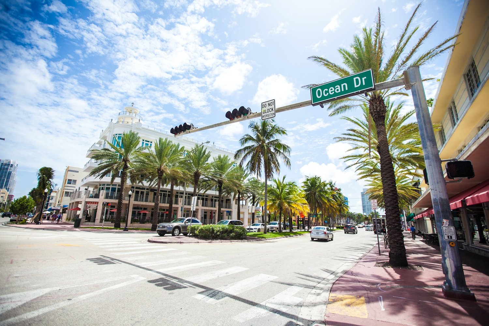
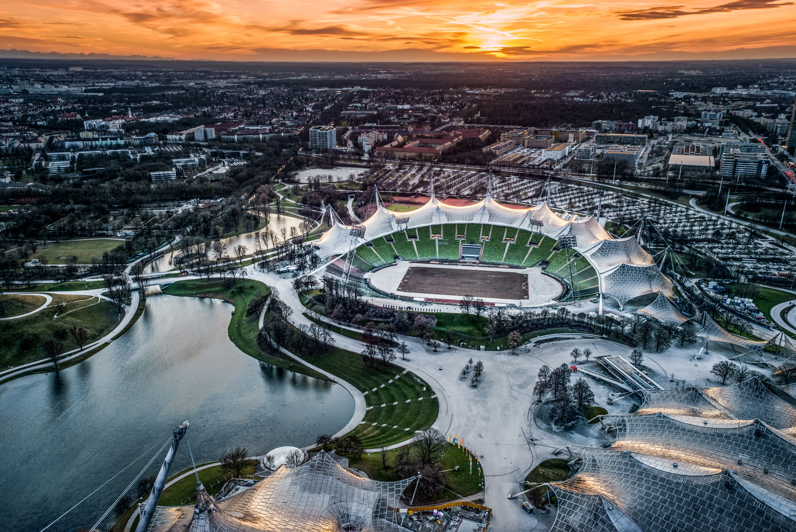

-

Barcelona
Is a city on the northeastern coast of Spain. It is the capital and largest city of Catalonia.
-
Hawaii
Is an island state in the Western region of the United States, about 2,000 miles from Pacific Ocean.
-
London
Is the capital and largest city of England. It stands on the River Thames in south-east England at the head of a 50-mile (80 km) estuary down to the North Sea and has been a major settlement for nearly two millennia.The City of London, its ancient core and financial centre, was founded by the Romans as Londinium and retains its medieval boundaries.
-

Miami
Officially the City of Miami, is a coastal metropolis in the U.S. state of Florida and the seat of Miami-Dade County in South Florida.
-

Munich
Is the capital and most populous city of the Free State of Bavaria. It is the third-largest city in Germany.
-
New York City
New York, often called New York City[b] or simply NYC, is the most populous city in the United States, located at the southern tip of New York State on one of the world's largest natural harbors.
-

Paris
Is the capital and most populous city of France. Since the 17th century Paris has been one of the world's major centres of finance, diplomacy, commerce, culture, fashion, and gastronomy.
-

Sydney
Is the capital city of the state of New South Wales, and the most populous city in Australia. Located on Australia's east coast, the metropolis surrounds Sydney Harbour and extends about 80 km (50 mi) from the Pacific Ocean in the east to the Blue Mountains in the west.
-
Tokyo
Officially the Tokyo Metropolis, is the capital of Japan and one of the most populous cities in the world.
-
Bali
Is a province of Indonesia and the westernmost of the Lesser Sunda Islands.